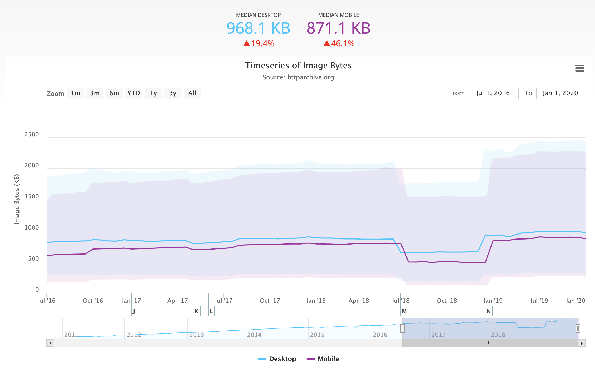
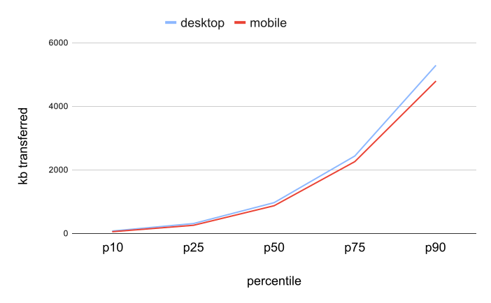
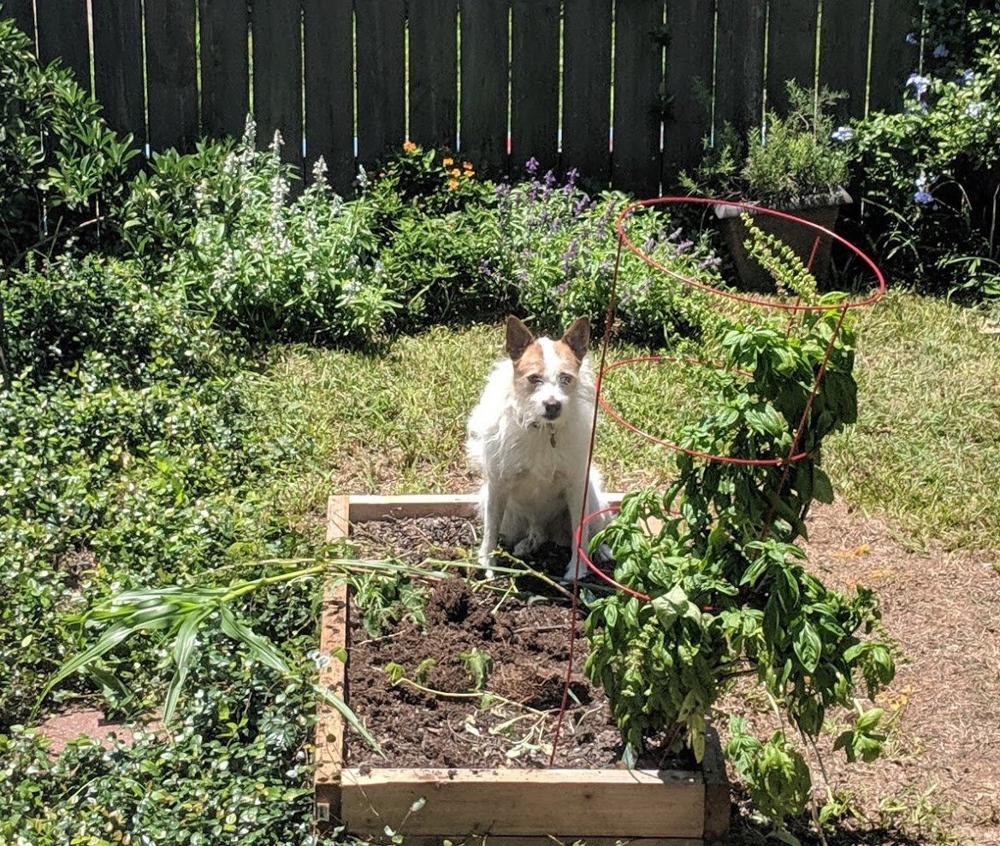
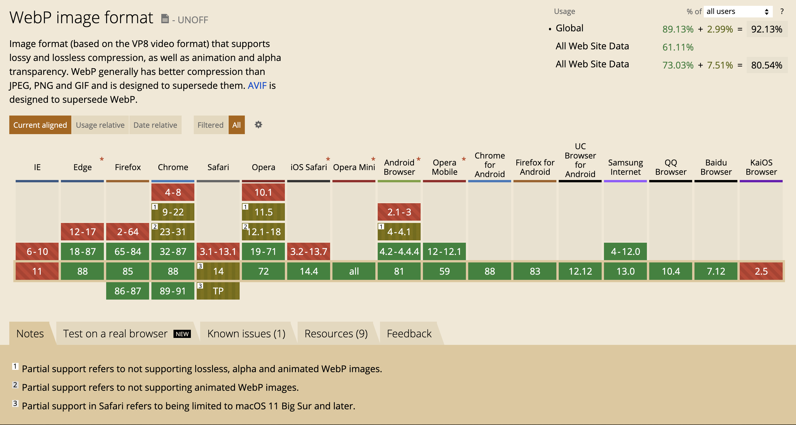
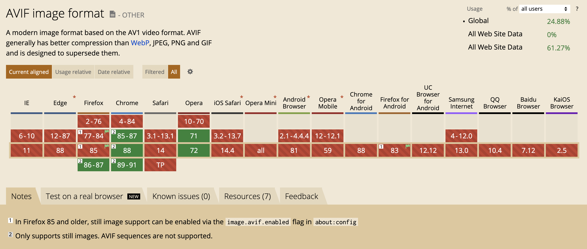
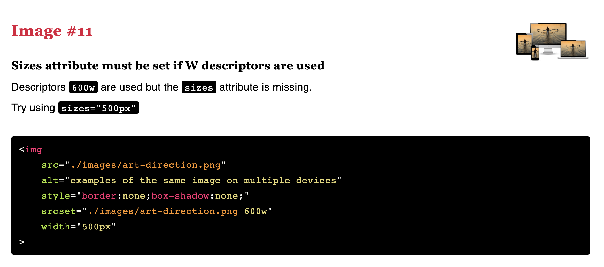
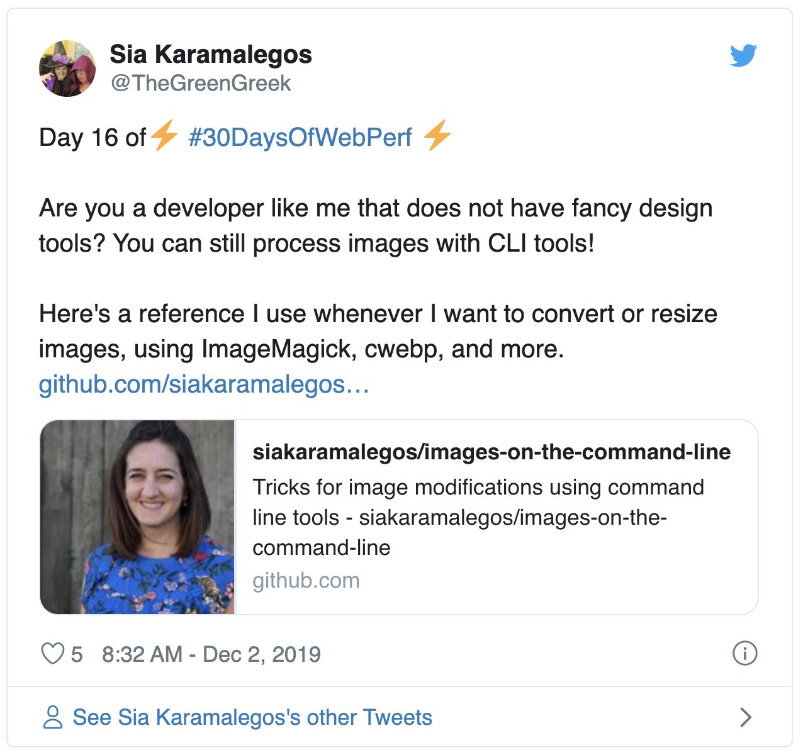
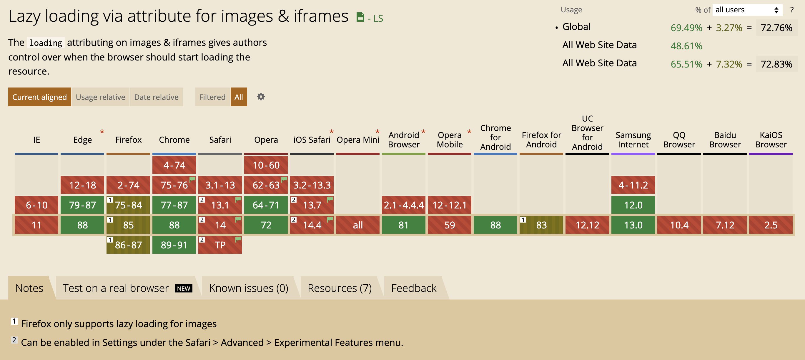

<!DOCTYPE html>
<html lang="en">
  <head>
    <meta charset="utf-8" />
    <meta name="viewport" content="width=device-width, initial-scale=1.0, maximum-scale=1.0, user-scalable=no" />

    <title>reveal-md</title>
    <link rel="stylesheet" href="./css/reveal.css" />
    <link rel="stylesheet" href="./_assets/style.css" id="theme" />
    <link rel="stylesheet" href="./css/highlight/github.css" />
    <link rel="stylesheet" href="./css/print/paper.css" type="text/css" media="print" />

  </head>
  <body>
    <div class="reveal">
      <div class="slides"><section  data-markdown><script type="text/template">

<!-- .slide: data-background="./images/yellow-camera.jpg" -->
<h1 class="title" style="text-align:left;">Responsive Images<span class="translucent"> for the Web</span></h1>
<h2 class="subtitle" style="color:#333;text-align:left;">Sia Karamalegos</h2>
</script></section><section  data-markdown><script type="text/template">
## hi, i'm sia

[sia.codes](https://sia.codes/)


</script></section><section  data-markdown><script type="text/template">
## [projects.sia.codes/responsive-images/](https://projects.sia.codes/responsive-images/)
</script></section><section  data-markdown><script type="text/template">

Images account for 48% of the bytes transferred <br>(median) needed to load a mobile webpage.

<small>[httparchive.org](https://httparchive.org), January 2021</small>
</script></section><section  data-markdown><script type="text/template">


<small>[httparchive.org](https://httparchive.org), January 2021</small>
</script></section><section  data-markdown><script type="text/template">
## kB by Percentile



<small>[httparchive.org](https://httparchive.org), January 2021</small>
</script></section><section  data-markdown><script type="text/template">
# #Goals
</script></section><section  data-markdown><script type="text/template">
<large style="font-size: 48px">Users shouldn't download<br> unnecessary bytes. 💾</large>
</script></section><section  data-markdown><script type="text/template">
<large style="font-size: 48px">Images should look good. 💅🏼</large>
</script></section><section  data-markdown><script type="text/template">
<large style="font-size: 48px">Stop the layout shift. ✋🏽</large>
</script></section><section  data-markdown><script type="text/template">
## Responsive &amp; Optimized Toolbox 🧰

- Best file format <!-- .element: class="fragment fade-in-then-semi-out" -->
- Right size and resolution <!-- .element: class="fragment fade-in-then-semi-out" -->
- Art direction <!-- .element: class="fragment fade-in-then-semi-out" -->
- Lazy loading <!-- .element: class="fragment fade-in-then-semi-out" -->
</script></section><section  data-markdown><script type="text/template">
<!-- .slide: data-background="./images/disk-drive.jpg" class="dark-highlighter" -->

# File Format <!-- .element: class="dark-background" style="color:#fecf16" -->
</script></section><section  data-markdown><script type="text/template">
> Choosing the right image format... can be far more important than any flashy new “responsive image” technique.

<small>Mat Marquis, [Image Performance](https://abookapart.com/products/image-performance)</small>

<aside class="notes"><p>Responsive Issues Community Group (RICG) chair. Getting the right image format is more important than any responsive image technique.</p>
</aside></script></section><section  data-markdown><script type="text/template">
## Raster vs Vector


<small>https://commons.wikimedia.org/wiki/File:Bitmap_VS_SVG.svg</small>

<aside class="notes"><p>Raster images contain a set of data about a 2D grid of pixels. Vectors are a system of coordinates and &quot;vectors&quot; than can be redrawn at any size. Rasters are good for photo-realism. Raster file formats are really just different compression methods.</p>
</aside></script></section><section  data-markdown><script type="text/template">
<svg version="1.1" width="300" height="200" xmlns="http://www.w3.org/2000/svg"><rect width="100%" height="100%" fill="turquoise" /><circle cx="150" cy="100" r="80" fill="rebeccapurple" /><text x="150" y="125" font-size="60" text-anchor="middle" fill="white">SVG</text></svg>

```xml
<svg version="1.1"
     width="300" height="200"
     xmlns="http://www.w3.org/2000/svg">

  <rect width="100%" height="100%" fill="turquoise" />
  <circle cx="150" cy="100" r="80" fill="rebeccapurple" />
  <text x="150" y="125" font-size="60"
        text-anchor="middle" fill="white">SVG</text>
</svg>
```

<aside class="notes"><p>(vector) - best for limited colors and sharp lines (e.g., logos)</p>
</aside></script></section><section  data-markdown><script type="text/template">
## GIF

Just. Don't.

<video controls width="700" autoplay loop>
  <source src="./images/dont.mp4" type="video/mp4">
  Sorry, your browser doesn't support embedded videos.
</video>

<aside class="notes"><p>(lossy) - fun but terrible. Use SVG or video instead. Inspect this (or on Twitter) and see that&#39;s it&#39;s video.</p>
</aside></script></section><section  data-markdown><script type="text/template">
## PNG: photo-like images with transparency


<aside class="notes"><p>(lossless) - best for photo-realistic with transparency. <strong>Lossless compression</strong> - like using ZIP for a file but all the data is still saved.</p>
</aside></script></section><section  data-markdown><script type="text/template">
## JPG: photo-like images with no transparency



<aside class="notes"><p>JPG is your photo workhorse. It&#39;s a lossy format that was created to compress by hue - in a way that human eyes are less likely to detect, so it&#39;s smaller than PNG. Use for all:</p>
</aside></script></section><section  data-markdown><script type="text/template">
## Progressive JPG


<small>[What is a progressive JPEG?](https://www.liquidweb.com/kb/what-is-a-progressive-jpeg/) by Liquid Web</small>

<aside class="notes"><p>hard to tell when an image has actually finished loading. You might even get a bad impression from a website because “the photos look blurry” (while in fact the site was still loading and you only saw a progressive preview of the photos)</p>
</aside></script></section><section  data-markdown><script type="text/template">
## WEBP: best of both worlds



<small>[caniuse](https://caniuse.com/#feat=webp)</small>

<aside class="notes"><p>WEBP is a new format available on most modern browsers (I&#39;m looking at you, Safari) that combines the best of JPG and PNG with smaller sizes. It&#39;s lossy or lossless and supports transparency.</p>
</aside></script></section><section  data-markdown><script type="text/template">
## AVIF: the future



<small>[Equal file sizes demo](https://jakearchibald.com/2020/avif-has-landed/#at-equal-file-sizes) by Jake Archibald, [caniuse](https://caniuse.com/avif)</small>

<aside class="notes"><p>AVIF is an extraction from the keyframes of the now popular video format AV1. Best compression, supports transparency and more.</p>
</aside></script></section><section  data-markdown><script type="text/template">
## Cheatsheet

- ✅ SVG: logos and icons <!-- .element: class="fragment fade-in-then-semi-out no-bullet" -->
- ❌ GIF: don't. use jpg for a still or video for animation. <!-- .element: class="fragment fade-in-then-semi-out no-bullet" -->
- ✅ PNG: photo-like images with transparency <!-- .element: class="fragment fade-in-then-semi-out no-bullet" -->
- ✅ JPG: photo-like images with no transparency <!-- .element: class="fragment fade-in-then-semi-out no-bullet" -->
- ✅ WEBP: smaller, but need to serve fallbacks <!-- .element: class="fragment fade-in-then-semi-out no-bullet" -->
- ✅ AVIF: EVEN SMALLER, but need to serve fallbacks <!-- .element: class="fragment fade-in-then-semi-out no-bullet" -->

<small>[Responsive Doggos Demo](https://projects.sia.codes/responsive-images-demo/)</small>

<aside class="notes"><p>Raster file formats are really just different compression methods. <strong>SVG</strong>: Can style and animate with CSS or make basic edits in XML. <strong>GIF</strong>: huge file sizes for animation, use video instead. svg or jpg are better for stills. Twitter converts GIF to video.  <strong>PNG</strong>: Use jpg if don&#39;t need transparency. <strong>JPG</strong>: much better compression algos.</p>
</aside></script></section><section  data-markdown><script type="text/template">
<!-- .slide: data-background="./images/stormtrooper.jpg" -->

# Size &amp; Resolution <!-- .element: style="color:#333; text-align:left;" -->

&nbsp;

&nbsp;

&nbsp;

&nbsp;
</script></section><section  data-markdown><script type="text/template">
## Demystifying DPR (device pixel ratio)

On a 2x screen, a displayed image width of 100px needs a 200px file/natural width image to look good.


<aside class="notes"><p>n this exaggerated example, the natural width of the bantha doggo on the left is 150px, then 300px, then 600px. The display width is 300px, and my screen has a DPR (device pixel ratio) of 2. 150px is fuzzy. Looking closely, the middle image is not the best quality either.</p>
</aside></script></section><section  data-markdown><script type="text/template">
## `srcset`

```html

```


<aside class="notes"><p>States a set of images and the natural size of each image. Browser assumes a display width of 100vw.  Files are candidates, not commands.. Alternatively, use x-descriptors.</p>
</aside></script></section><section  data-markdown><script type="text/template">
## `sizes`

```html

```

<aside class="notes"><p>States display width for a set of media conditions. Order matters! First match is used. No media condition for the last one (default for no match). Add analogous CSS.</p>
</aside></script></section><section  data-markdown><script type="text/template">
## RespImageLint FTW 🏆



<small>[RespImageLint bookmarklet](https://ausi.github.io/respimagelint/)</small>
</script></section><section  data-markdown><script type="text/template">
<!-- .slide: data-background="./images/elder-phone.jpg" -->

<aside class="notes"><p>How many different resolutions? Science suggests humans can see 720ppi 1 foot from a screen. The iPhone 11 is 326ppi (MBP is 227) so in most cases, you&#39;re safe providing only 1x and 2x. You might consider 4x in cases of high-resolution projectors or art.</p>
</aside></script></section><section  data-markdown><script type="text/template">
<!-- .slide: data-background="./images/chilis.jpg" -->

&nbsp;

&nbsp;

&nbsp;

&nbsp;

# Art Direction <!-- .element: style="text-align:right;color:#111;" -->
</script></section><section  data-markdown><script type="text/template">


<aside class="notes"><p>(1) Art direction is a technique for drawing attention to the most important parts, or targeting specific features of an image, even when it’s viewed on different devices or platforms. (2) So how do we do art direction?</p>
</aside></script></section><section  data-markdown><script type="text/template">
## `<picture>`

```html
<picture>
  <source media="(min-width: 800px)"
          srcset="wide_800.jpg 800w,
                  wide_1600.jpg 1600w">
  <source media="(min-width: 400px)"
          srcset="narrow_400.jpg 400w,
                  narrow_800.jpg 800w">
  
</picture>
```

<aside class="notes"><p>Provides image candidates based on device size, resolution, orientation, and more. Use <code>media</code> attribute for viewport spec. First match is used. Always provide <code>&lt;img&gt;</code> last for no match or browsers that do not support <code>&lt;picture&gt;</code> and <code>&lt;source&gt;</code> (1) In this <code>picture</code> tag, we have 2 sources and an img. Older browsers simply ignore the picture and source tags and use the img tag. (2) The video tag also works this way and can have multiple <code>source</code> tags</p>
</aside></script></section><section  data-markdown><script type="text/template">
## Bleeding-Edge File Formats (WEBP & AVIF!)

```html
<picture>
  <source type="image/avif" srcset="pug_life.avif">
  <source type="image/webp" srcset="pug_life.webp">
  
</picture>
```

<aside class="notes"><p>Browser uses the first compatible file type. Set <code>&lt;img&gt;</code> <code>src</code> to a format supported by all browsers.</p>
</aside></script></section><section  data-markdown><script type="text/template">
## CSS Background Images

- Use media queries for width and DPR
- Use postcss/autoprefixer to get prefixes

```css
@media only screen and (min-width: 320px) {
  /* small screen, DPR = 1 */ }
@media only screen and (min-device-pixel-ratio: 2) and (min-width: 320px),
  only screen and (min-resolution: 192dpi) and (min-width: 320px),
  only screen and (min-resolution: 2dppx) and (min-width: 320px),{
  /* small screen, DPR = 2 */ }
```

<aside class="notes"><p>When should an image be in the HTML vs CSS?</p>
</aside></script></section><section  data-markdown><script type="text/template">
## webp, srcset, &amp; sizes, oh my! 🦁🐯🐻

```html
<picture>
  <source srcset="./images/sofa_pug_400.avif 400w,
                  ./images/sofa_pug_800.avif 800w"
          type="image/avif" />
  <source srcset="./images/sofa_pug_400.webp 400w,
                  ./images/sofa_pug_800.webp 800w"
          type="image/webp" />
  
</picture>
```
</script></section><section  data-markdown><script type="text/template">
<!-- .slide: data-background="./images/photo-collage.jpg" class="dark-highlighter" -->

# Generating Images & Markup <!-- .element: style="color:#fecf16;" -->
</script></section><section  data-markdown><script type="text/template">


<small>[Images on the Command Line reference](https://github.com/siakaramalegos/images-on-the-command-line), [Tweet](https://twitter.com/TheGreenGreek/status/1201494377522225153)</small>
</script></section><section  data-markdown><script type="text/template">
## Paid Services 💰

- [Cloudinary](https://cloudinary.com/)
- [Netlify large media](https://docs.netlify.com/large-media/overview/#large-media-docs)
- ...and many others

```bash
[baseUrl]/eeeps/image/upload/f_auto,q_70,w_512/photo.jpg
/images/apples.jpg?nf_resize=fit&w=300&h=400
```

<small>[Image Analysis Tool by Cloudinary](https://webspeedtest.cloudinary.com/)*</small>
</script></section><section  data-markdown><script type="text/template">
## Cloudinary + Eleventy

`f_auto` means we can skip the picture tag!

`[baseUrl]/image/upload/f_auto,q_70,w_512/photo.jpg`

```html

```

<small>[Eleventy and Cloudinary images](https://sia.codes/posts/eleventy-and-cloudinary-images/)</small>

<aside class="notes"><p>AVIF is not yet supported</p>
</aside></script></section><section  data-markdown><script type="text/template">
## Other tooling options:

- Simple `` and server/serverless function selects best image to serve
- Build tools like various webpack loaders (but `sizes` not supported)
  - [responsive-loader](https://github.com/herrstucki/responsive-loader)
  - [gatsby-image](https://www.gatsbyjs.org/packages/gatsby-image/) and [gatsby-transformer-sharp](https://image-processing.gatsbyjs.org/)


<aside class="notes"><p>(1) Many people have their server hijack the request and serve the best image to minimize markup. Could also use a serverless function. (2) Cost money. (3) So many options - both create your srcset code and process the images</p>
</aside></script></section><section  data-markdown><script type="text/template">
# `display: none;`
# not a perf strategy.

<aside class="notes"><p>Some browsers will still load hidden images.</p>
</aside></script></section><section  data-markdown><script type="text/template">
<!-- .slide: data-background="./images/falling-mountains.jpg" class="dark-highlighter" -->

# Layout Shift
</script></section><section  data-markdown><script type="text/template">
<video controls width="800" autoplay loop>
  <source src="./images/layout-shift.mp4" type="video/mp4">
  Sorry, your browser doesn't support embedded videos.
</video>
</script></section><section  data-markdown><script type="text/template">
```html

```

```css
img {
  height: auto;
  /* max-width: 100%; */
}
```

<small>[Do This to Improve Image Loading on Your Website](https://www.youtube.com/watch?v=4-d_SoCHeWE&feature=youtu.be) - video by Jen Simmons</small>

<aside class="notes"><p>Setting the height and width on the image sets an aspect ratio, and then the CSS is respected.</p>
</aside></script></section><section  data-markdown><script type="text/template">
<video controls width="800" autoplay loop>
  <source src="./images/fixed-layout-shift.mp4" type="video/mp4">
  Sorry, your browser doesn't support embedded videos.
</video>
</script></section><section  data-markdown><script type="text/template">
<!-- .slide: data-background="./images/loading.jpg" class="dark-highlighter" -->

# Loading <!-- .element: style="color:#fecf16;" -->
</script></section><section  data-markdown><script type="text/template">
## ⚡🦄🌈⚡ Native lazy-loading ⚡🦄🌈⚡

```html
<!-- Lazy-load offscreen image when user scrolls near -->


<!-- Load an image immediately -->

```

<small>[addyosmani.com/blog/lazy-loading/](https://addyosmani.com/blog/lazy-loading/)</small>
</script></section><section  data-markdown><script type="text/template">
# ⚡🦄🐈🌈🐼🍕🎂🍾🎉🐶🦄🐈🌈🐼🍕🎂🍾🎉🐶⚡🐈🌈🐼🍕🎂🍾🎉🐶⚡🦄🌈🐼🍕🎂🍾🎉🐶⚡🦄🐈
</script></section><section  data-markdown><script type="text/template">
# 😭😭😭😭😭😭



<small>[caniuse](https://caniuse.com/#feat=loading-lazy-attr)</small>
</script></section><section  data-markdown><script type="text/template">
In the meantime, use a tool like [lazysizes](https://github.com/aFarkas/lazysizes).

<small>Also check out: [Lazy load embedded YouTube videos](https://css-tricks.com/lazy-load-embedded-youtube-videos/) on CSS Tricks</small>

<aside class="notes"><p>Can also do a blur-up and calculate sizes for you.</p>
</aside></script></section><section  data-markdown><script type="text/template">
## Toolbox 🧰

- Use the right image type (png vs jpg, gif vs video). <!-- .element: class="fragment fade-in-then-semi-out" -->
- Serve the right size image for the user's screen width and device pixel ratio <!-- .element: class="fragment fade-in-then-semi-out" -->
- Compress images with a tool like ImageOptim, TinyPNG, or use a webpack plugin like imagemin-webpack-plugin <!-- .element: class="fragment fade-in-then-semi-out" -->
- Use newer, improved formats like webp. <!-- .element: class="fragment fade-in-then-semi-out" -->
- Lazy loading with a tool like lazysizes <!-- .element: class="fragment fade-in-then-semi-out" -->

<br>
<br>
<small>
  Check out <a href="https://developer.mozilla.org/en-US/docs/Learn/HTML/Multimedia_and_embedding/Responsive_images">Responsive images</a> on MDN &amp; <a href="https://abookapart.com/products/image-performance">Image Performance</a> by Mat Marquis.
  <br><a href="https://www.npmjs.com/package/sharp">Sharp</a> &amp; <a href="https://www.imagemagick.org/script/index.php">Imagemagick</a> are great for resizing images. Examples at <a href="https://web.dev/fast/serve-responsive-images">Serve Responsive Images</a>. Use cwebp for creating webp files (<a href="https://developers.google.com/speed/webp/docs/cwebp">docs</a>).
</small>
</script></section><section  data-markdown><script type="text/template">
<!-- .slide: data-background="./images/yellow-camera.jpg" -->
<h1 class="title" style="text-align:left;">Thanks!</h1>

<p style="color:#333;text-align:left;">Slides:<br> <a href="https://projects.sia.codes/responsive-images/" class="link-secondary">projects.sia.codes/responsive-images/</a></p>
<p style="color:#333;text-align:left;">30 Days of Web Perf:<br> <a href="http://bit.ly/30-days-web-perf" class="link-secondary">bit.ly/30-days-web-perf</a></p>
<p style="color:#333;text-align:left;">Writing, resources, and more:<br> <a href="https://sia.codes/" class="link-secondary">sia.codes</a></p>


</script></section><section  data-markdown><script type="text/template">
## Photo credits

- Title slide - [Malte Wingen](https://unsplash.com/@maltewingen?utm_source=unsplash&utm_medium=referral&utm_content=creditCopyText)
- File format slide - [Patrick Lindenberg](https://unsplash.com/@heapdump?utm_source=unsplash&utm_medium=referral&utm_content=creditCopyText)
- Stormtrooper lego in sand - [Daniel Cheung](https://unsplash.com/@danielkcheung?utm_source=unsplash&utm_medium=referral&utm_content=creditCopyText)
- Loading bay - [Hannes Egler](https://unsplash.com/@egla?utm_source=unsplash&utm_medium=referral&utm_content=creditCopyText)
- Chilis and tiles - [Toa Heftiba](https://unsplash.com/@heftiba?utm_source=unsplash&utm_medium=referral&utm_content=creditCopyText)
- Older person using phone - [Joseph Chan](https://unsplash.com/@yulokchan?utm_source=unsplash&utm_medium=referral&utm_content=creditCopyText)
- Instant photo collage - [Soragrit Wongsa](https://unsplash.com/@invictar1997?utm_source=unsplash&utm_medium=referral&utm_content=creditCopyText)
- Man falling from mountains - [Joanna Nix](https://unsplash.com/@joanna_nix?utm_source=unsplash&utm_medium=referral&utm_content=creditCopyText)
</script></section></div>
    </div>

    <script src="./js/reveal.js"></script>

    <script>
      function extend() {
        var target = {};
        for (var i = 0; i < arguments.length; i++) {
          var source = arguments[i];
          for (var key in source) {
            if (source.hasOwnProperty(key)) {
              target[key] = source[key];
            }
          }
        }
        return target;
      }

      // Optional libraries used to extend on reveal.js
      var deps = [
        { src: './plugin/markdown/marked.js', condition: function() { return !!document.querySelector('[data-markdown]'); } },
        { src: './plugin/markdown/markdown.js', condition: function() { return !!document.querySelector('[data-markdown]'); } },
        { src: './plugin/highlight/highlight.js', async: true, callback: function() { hljs.initHighlightingOnLoad(); } },
        { src: './plugin/zoom-js/zoom.js', async: true },
        { src: './plugin/notes/notes.js', async: true },
        { src: './plugin/math/math.js', async: true }
      ];

      // default options to init reveal.js
      var defaultOptions = {
        controls: true,
        progress: true,
        history: true,
        center: true,
        transition: 'default', // none/fade/slide/convex/concave/zoom
        dependencies: deps
      };

      // options from URL query string
      var queryOptions = Reveal.getQueryHash() || {};

      var options = extend(defaultOptions, {"transition":"none"}, queryOptions);
    </script>


    <script>
      Reveal.initialize(options);
    </script>
  </body>
</html>
